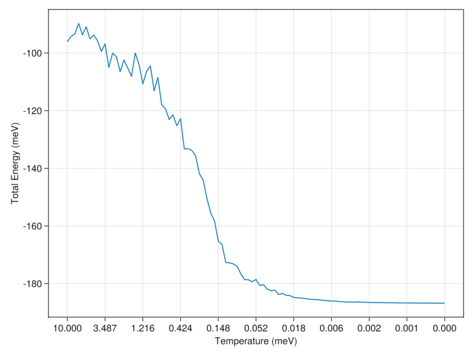
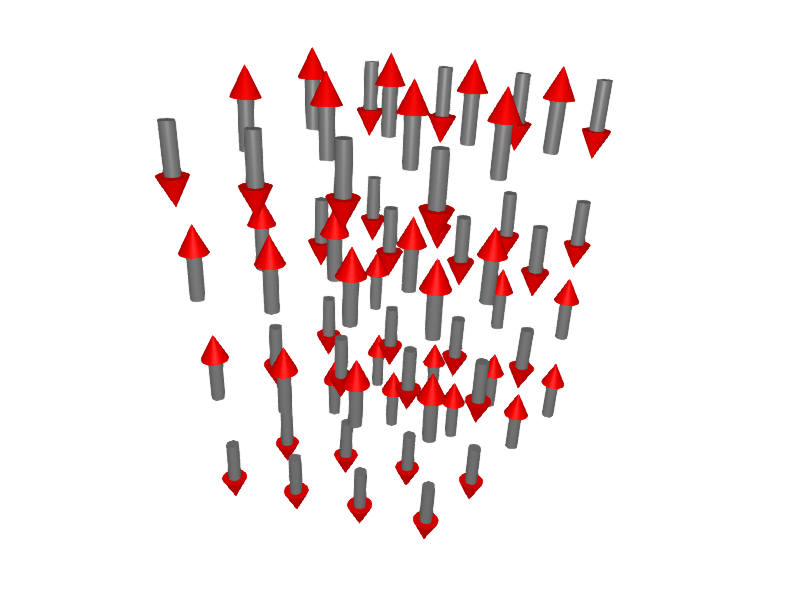
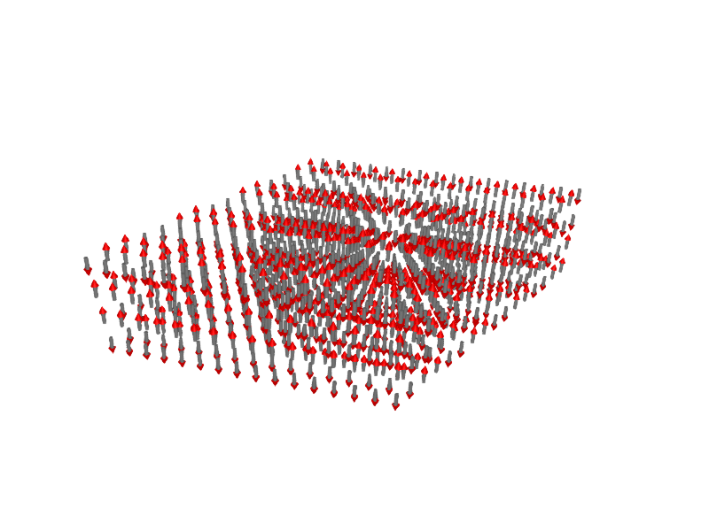
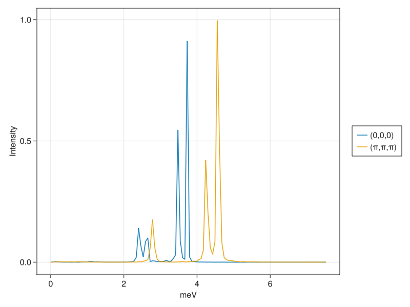
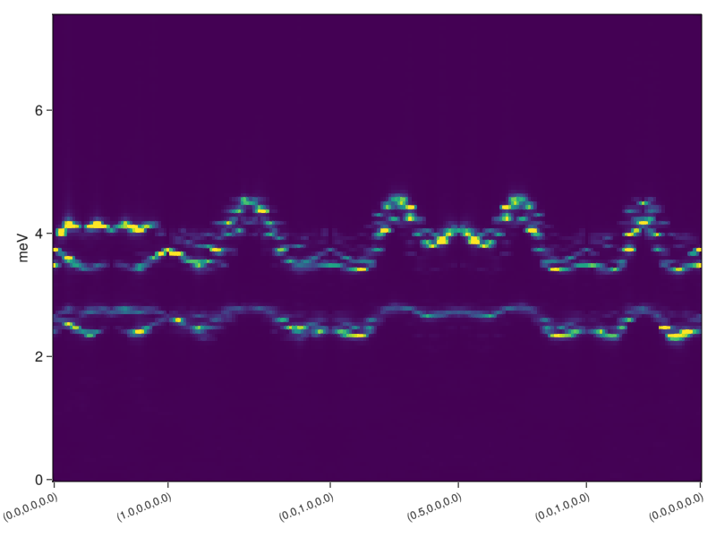
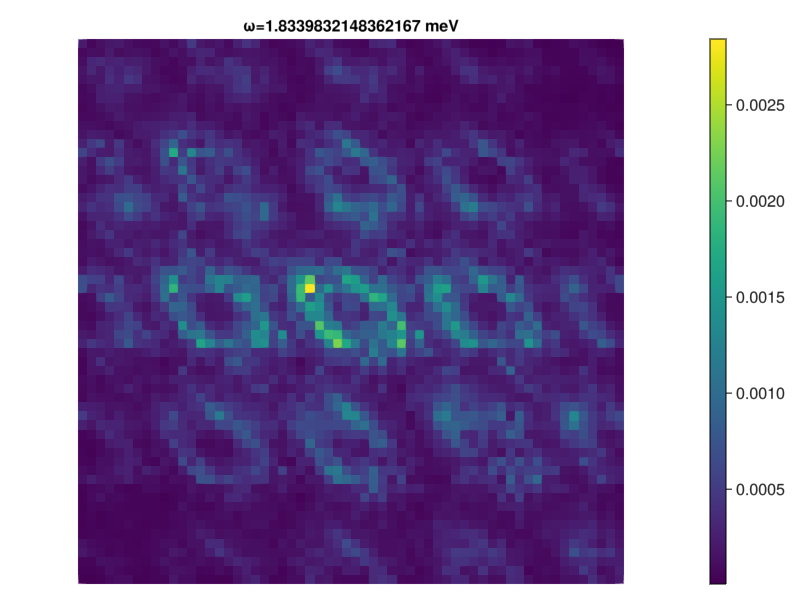
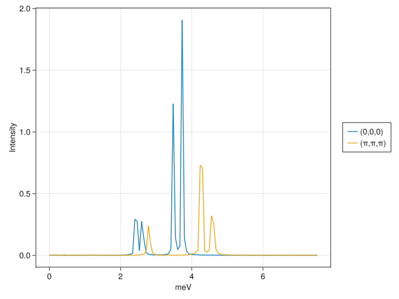
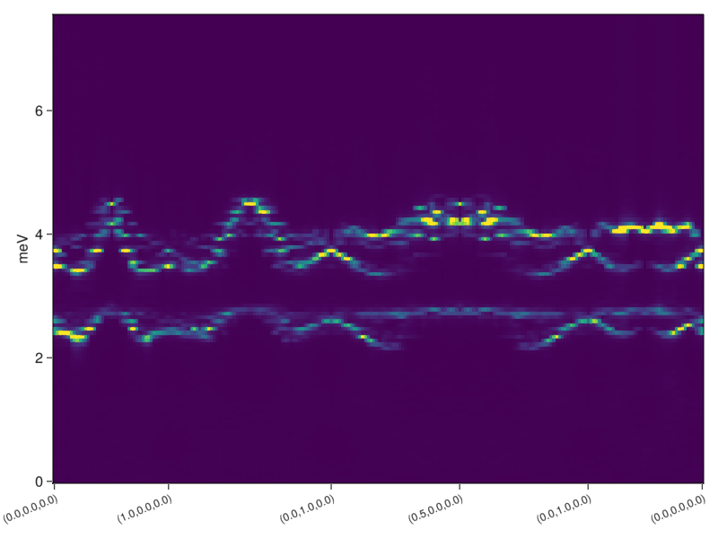

Case Study: FeI$_{2}$
FeI$_{2}$ is an effective spin-1 material with strong single-ion anisotropy, making it an excellent candidate for treatment with SU(3) spin dynamics. In particular, one of the elementary excitations of the system can only be captured clasically with an SU(3) treatment. A magnon, clearly visible in the experimental data, would simply be absent if we were to employ traditional Landau-Lifshitz dynamics or SU(2) spin wave theory. Full details about the model can be found in reference [1].
The model contains a number of competing, anisotropic exchange interactions together with a strong single-ion anisotropy. Writing the exchange terms in the most general way, the Hamiltonian has the form:
\[\mathcal{H}=\sum_{(i,j)} J^{\alpha\beta}_{ij} S^{\alpha}_i S^{\beta}_j - D\sum_i \left(S^z\right)^2\]
We will calculate a dynamic structure factor using this model. We begin by importing the required packages, starting with Sunny. We will also add GLMakie, a plotting package. If you see Package X not found in current path, you can install the package by entering using Pkg; pkg"add X" in the Julia REPL.
using Sunny
using GLMakie, FormattingCrystals and symmetry analysis
The first step of defining a model is building a Crystal. If a CIF file available, it can be loaded using Crystal("file.cif"). A Crystal may also be created simply by providing a space group number. Here we will construct the crystal by hand, providing Crystal with a set of lattice vectors and basis vectors, where the basis vectors specify the locations of atoms within the unit cell in terms of fractional coordinates. We also assign labels to each atom with the optional keyword types.
For convenience, we will create a function which performs all these steps.
function FeI2_crystal()
a = b = 4.05012 # Define the length of the three lattice vectors,
c = 6.75214 # with units here given in angstroms.
lat_vecs = lattice_vectors(a, b, c, 90, 90, 120) # This is a convenience method.
# Alternatively, lattice vectors may be
# specified as columns of a 3x3 matrix.
basis_vecs = [[0,0,0], [1/3, 2/3, 1/4], [2/3, 1/3, 3/4]] # Locations of atoms in fractional
# coordinates.
types = ["Fe", "I", "I"] # Assign a name to each atom
Crystal(lat_vecs, basis_vecs; types) # Create the crystal
end;Sunny will perform symmetry analysis on the crystal, identifying the space group. To aid the symmetry analysis, it is often helpful to provide names for the atoms, as we did above. The result of Sunny's analysis is given as output when creating the Crystal:
FeI2_crystal()Crystal
HM symbol 'P -3 m 1' (164)
Lattice params a=4.05, b=4.05, c=6.752, α=90°, β=90°, γ=120°
Cell volume 95.92
Type 'Fe', Wyckoff 1a (point group '-3m.'):
1. [0, 0, 0]
Type 'I', Wyckoff 2d (point group '3m.'):
2. [0.3333, 0.6667, 0.25]
3. [0.6667, 0.3333, 0.75]
Sunny has inferred the space group P -3 m 1, corresponding to international number 164. This agrees with the crystal specification given in reference [1].
Sunny will use the symmetry information contained in a Crystal throughout the process of model creation. In particular, the Crystal will be used to determine the form of allowed interactions and anisotropies. The information also allows Sunny to propagate interactions and anisotropies to all symmetry-equivalent sites on a lattice.
Spin systems
The basic type used to model a spin system is System. Its constructor is:
System(crystal, latsize, infos, mode)The argument latsize defines the system lattice size as three components, in multiples of unit cells. The argument infos defines the spin magnitude $S$ (in units of $ħ$) and the $g$-factor or $g$-tensor for each ion, and this information will be propagated by crystal symmetry. The argument mode determines whether to use traditional Landau-Lifshitz dynamics (:dipole), or generalized SU(N) dynamics (:SUN).
In this example, we use the command subcrystal to isolate the magnetic Fe ions, and build a system of $4×4×4$ unit cells:
cryst = subcrystal(FeI2_crystal(), "Fe")
sys = System(cryst, (4,4,4), [SpinInfo(1,S=1)], :SUN)System [SU(3)]
Cell size 1, Lattice size (4, 4, 4)
Sunny created an SU(3) system to capture the dynamics of the $2S+1=3$ distinct states for each spin $S=1$ degree of freedom. The default $g$-factor of 2 can be overriden via the SpinInfo constructor.
Interactions and anisotropies
Obtaining symmetry information
The System above does not contain interactions, only a finite lattice with the symmetry properities of our Crystal together with local spin information for each site of the lattice. We still need to specify the interactions and anisotropies given in our Hamiltonian.
Information about the allowed interactions and anisotropies is provided by print_symmetry_table(cryst, max_dist):
print_symmetry_table(cryst, 10.0)Site 1
Type 'Fe', position [0, 0, 0], multiplicity 1
Allowed g-tensor: | A 0 0 |
| 0 A 0 |
| 0 0 B |
Allowed anisotropy in Stevens operators 𝒪[k,q]:
c₁*𝒪[2,0] +
c₂*𝒪[4,-3] + c₃*𝒪[4,0] +
c₄*𝒪[6,-3] + c₅*𝒪[6,0] + c₆*𝒪[6,6]
Bond(1, 1, [1, 0, 0])
Distance 4.05012, coordination 6
Connects 'Fe' at [0, 0, 0] to 'Fe' at [1, 0, 0]
Allowed exchange matrix: | A 0 0 |
| 0 B D |
| 0 D C |
Bond(1, 1, [0, 0, 1])
Distance 6.75214, coordination 2
Connects 'Fe' at [0, 0, 0] to 'Fe' at [0, 0, 1]
Allowed exchange matrix: | A 0 0 |
| 0 A 0 |
| 0 0 B |
Bond(1, 1, [1, 2, 0])
Distance 7.01501361675086, coordination 6
Connects 'Fe' at [0, 0, 0] to 'Fe' at [1, 2, 0]
Allowed exchange matrix: | A 0 0 |
| 0 B D |
| 0 D C |
Bond(1, 1, [1, 0, 1])
Distance 7.8736818956572, coordination 12
Connects 'Fe' at [0, 0, 0] to 'Fe' at [1, 0, 1]
Allowed exchange matrix: | A F E |
| F B D |
| E D C |
Bond(1, 1, [2, 0, 0])
Distance 8.10024, coordination 6
Connects 'Fe' at [0, 0, 0] to 'Fe' at [2, 0, 0]
Allowed exchange matrix: | A 0 0 |
| 0 B D |
| 0 D C |
Bond(1, 1, [1, 2, -1])
Distance 9.73662213618255, coordination 6
Connects 'Fe' at [0, 0, 0] to 'Fe' at [1, 2, -1]
Allowed exchange matrix: | A 0 0 |
| 0 B D |
| 0 D C |
Bond(1, 1, [1, 2, 1])
Distance 9.73662213618255, coordination 6
Connects 'Fe' at [0, 0, 0] to 'Fe' at [1, 2, 1]
Allowed exchange matrix: | A 0 0 |
| 0 B D |
| 0 D C |
The output begins by specifying information about each site of the Crystal. (In our case there is only one site, since we restricted our crystal to the iron ion.) The allowed form of any g-tensor is given as a 3x3 matrix, and the allowed form of any single-site anisotropy is given as the most general linear combination of Stevens operators.
After single-site information, Sunny provides a list of the allowed bilinear interactions on every bond that lies within max_dist from the origin of the unit cell. The bond are specified in the following format: Bond(i, j, n). i and j are an pair of atoms within the unit cell. The number of each site is as given when creating the Crystal. Note that the relative order of i and j is significant when the exchange tensor contains antisymmetric elements, as is the case for Dzyaloshinskii–Moriya interactions. Finally, n is a vector of three integers specifying lattice offsets. So Bond(1, 1, [1,0,0]) specifies a bond between the same atom in two different unit cells, where the cell offset is along the direction of the first lattice vector.
Assigning interactions and anisotropies
Bilinear interactions are assigned to bonds with set_exchange!(sys, J, bond), where J is an exchange tensor. J may be either a number, for simple Heisenberg exchange, or a 3x3 matrix. When set_exchange! is called, Sunny will both analyze J to ensure that it is symmetry-allowed and then propagate J, with appropriate transformations, to all symmetry-equivalent bonds in your System.
The function to assign a single site anisotropy is similar: set_anisotropy!(sys, op, i). i is simply a site rather than a bond. op here a polynomial of either spin operators or Stevens operators. Sunny provides special symbols for their construction: 𝒮 is a vector of three symbolic operators, corresponding to 𝒮ˣ, 𝒮ʸ, and 𝒮ᶻ, and 𝒪 is a matrix of symbolic Stevens that takes two indices, corresponding to the traditional $k$ (irrep) and $q$ (row or column) indices of the Stevens tensors. For example, to assign $(S^z)^2$ to our only site, we would call set_anisotropy!(sys, 𝒮[3]^2, 1).
The function below combines everything we have learned so far to create a complete model of our FeI2 system.
function FeI2_system(; latsize=(4,4,4), S=1, seed=0)
# Create the system
cryst = subcrystal(FeI2_crystal(), "Fe")
sys = System(cryst, latsize, [SpinInfo(1; S)], :SUN; seed)
# Establish exchange parameters as provided in reference [1]
J1pm = -0.236
J1pmpm = -0.161
J1zpm = -0.261
J2pm = 0.026
J3pm = 0.166
J′0pm = 0.037
J′1pm = 0.013
J′2apm = 0.068
D = 2.165
J1zz = -0.236
J2zz = 0.113
J3zz = 0.211
J′0zz = -0.036
J′1zz = 0.051
J′2azz = 0.073
J1xx = J1pm + J1pmpm
J1yy = J1pm - J1pmpm
J1yz = J1zpm
# Convert parameters to exchange matrices and make a list of `Js`
Js = [
[J1xx 0.0 0.0;
0.0 J1yy J1yz;
0.0 J1yz J1zz],
[J2pm 0.0 0.0;
0.0 J2pm 0.0;
0.0 0.0 J2zz],
[J3pm 0.0 0.0;
0.0 J3pm 0.0;
0.0 0.0 J3zz],
[J′0pm 0.0 0.0;
0.0 J′0pm 0.0;
0.0 0.0 J′0zz],
[J′1pm 0.0 0.0;
0.0 J′1pm 0.0;
0.0 0.0 J′1zz],
[J′2apm 0.0 0.0;
0.0 J′2apm 0.0;
0.0 0.0 J′2azz],
]
# Make a corrresponding list of bonds
bonds = [
Bond(1,1,[1,0,0]),
Bond(1,1,[1,2,0]),
Bond(1,1,[2,0,0]),
Bond(1,1,[0,0,1]),
Bond(1,1,[1,0,1]),
Bond(1,1,[1,2,1]),
]
# Assign interactions and anisotropy to the system
for (bond, J) in zip(bonds, Js)
set_exchange!(sys, J, bond)
end
set_anisotropy!(sys, -D*𝒮[3]^2, 1)
return sys
end;We can now create a System corresponding to our model:
sys_small = FeI2_system(; latsize=(4,4,4))System [SU(3)]
Cell size 1, Lattice size (4, 4, 4)
Calculating a dynamical spin structure factor
In the remainder of this tutorial, we will examine Sunny's tools for calculating structure factors using generalized SU(N) classical dynamics. This is a Monte Carlo calculation and will require the sampling of many spin configurations from the Boltzmann distribution at a particular temperature. These samples are then used to generate dynamical trajectories that are analyzed to produce correlation information, i.e., a dynamical structure factor $\mathcal{S}^{\alpha\beta}(\mathbf{q},\omega)$. To compare results with low-temperature experimental data or spin wave calculations, it is necessary to first identify a ground state of the system. We can then thermalize this ground state with the Langevin dynamics to generate sample spin configurations.
Finding a ground state
While we will be using Langevin integration to generate sample spin configurations, it is also a powerful tool for optimization, as will now be demonstrated.
E0 = 2.165 # Largest energy scale in the Hamiltonian
Δt = 0.05/E0 # Safe choice for integration step size
kT = 10.0 # Temperature in meV
λ = 0.1 # Magnitude of coupling to thermal bath
langevin = Langevin(Δt, kT, λ);The following function will perform simulated annealing according to a list of temperatures and a number of time steps per temperature,
function anneal!(sys, langevin, nsteps, kTs)
Es = zeros(length(kTs)) # Buffer to record energy
for (i, kT) in enumerate(kTs)
langevin.kT = kT # Set the temperature
for _ in 1:nsteps # Advance the state nsteps
step!(sys, langevin)
end
Es[i] = energy(sys) # Record the energy
end
return Es
endanneal! (generic function with 1 method)Finally we perform the annealing.
kT = 10.0 # Starting temp in meV
kTs = [kT*0.9^k for k in 0:100] # Temperature schedule
nsteps = round(Int, 30.0/Δt) # Set nsteps to 30.0 meV⁻¹
randomize_spins!(sys_small) # Set random (infinite temperature) initial condition
Es = anneal!(sys_small, langevin, nsteps, kTs)
for _ in 1:nsteps # Run at T=0 for a short period
step!(sys_small, langevin)
endPlotting the energies recorded during the annealing process will help us determined whether the process has converged.
fig = Figure()
idxs = 1:10:length(kTs)
xticks = (idxs, [format("{:.3f}", kTs[i]) for i in idxs])
ax = Axis(fig[1,1];
xlabel = "Temperature (meV)",
ylabel = "Total Energy (meV)",
xticks
)
lines!(ax, Es)
fig
It appears that the system has reached at least a local minimum. We will use the function plot_spins to examine if the spin configuration matches our prior ideas about what the ground state looks like.
plot_spins(sys_small; arrowlength=2.5, linewidth=0.75, arrowsize=1.5)
This is correct, but our spin system is quite small. Because the calculation will be performed on a finite lattice, our resolution in momentum space will be limited by the system size. We will therefore extend the system periodically into a larger System:
sys = extend_periodically(sys_small, (4,4,1)) # Multiply 1st and 2nd lattice dimensions by 4
plot_spins(sys; arrowlength=2.5, linewidth=0.75, arrowsize=1.5)
Calculating the structure factor
To get a good equilibrium sample, we will next thermalize the system at a low temperature, again using the Langevin dynamics. The parameters we select below are known to be effective for this model but will need to be determined for each specific case.
decorrelation_time = 2.0 # Time in meV⁻¹ required to get an uncorrelated sample
nsteps = round(Int, decorrelation_time/Δt) # Convert to number of time steps
kT = 0.5 * Sunny.meV_per_K # Set temperature meV equivalent of 0.5 K
langevin = Langevin(Δt, kT, λ) # Build Langevin integrator with these parameters
for _ in 1:5nsteps # Run for sufficient time to thermalize
step!(sys, langevin)
end;The spins in our system should now represent a good sample at 0.5 K. We can proceed with the calculation by calling DynamicStructureFactor. Three keyword parameters are required to determine the ω information that will be calculated: an integration step size, the number of ωs to resolve, and the maximum ω to resolve. For the time step, twice the value used for the Langevin integrator is usually a good choice.
sf = DynamicStructureFactor(sys; Δt=2Δt, nω=120, ωmax=7.5);sf currently contains dynamical structure data generated from a single sample. Additional samples can be added by generating a new spin configuration and calling add_sample!:
for _ in 1:2
for _ in 1:nsteps # Generate a new sample spin configuration
step!(sys, langevin)
end
add_sample!(sf, sys) # Accumulate the sample into `sf`
end;Accessing structure factor data
The basic function for accessing intensity data is intensities, which, in addition to the structure factor data itself, takes a list of wave vectors and a mode parameter. The options for the mode parameter are :trace, :perp and :full which return, respectively, the trace, the unpolarized intensity, and the full set of matrix elements (correlations of spin components) at the specified wave vectors. For example, we can plot two single-Q slices as follows.
qs = [[0, 0, 0], [0.5, 0.5, 0.5]]
is = intensities(sf, qs, :trace; kT)
fig = Figure()
ax = Axis(fig[1,1]; xlabel="meV", ylabel="Intensity")
l1 = lines!(ax, ωs(sf), is[1,:])
l2 = lines!(ax, ωs(sf), is[2,:])
Legend(fig[1,2], [l1, l2], ["(0,0,0)", "(π,π,π)"])
fig
Note that we provided the optional keyword kT to intensities to enable Sunny to apply a classical-to-quantum rescaling of intensities.
Frequently we want to extract energy intensities along lines that connect special wave vectors. Sunny provides a function connected_path to makes this easy. The density of sample points can be tuned with a density argument.
points = [[0.0, 0.0, 0.0], # List of wave vectors that define a path
[1.0, 0.0, 0.0],
[0.0, 1.0, 0.0],
[0.5, 0.0, 0.0],
[0.0, 1.0, 0.0],
[0.0, 0.0, 0.0]]
formfactors = [FormFactor(1, "Fe2"; g_lande=3/2)] # Ion information for each site to
# retrieve form factor correction parameters
density = 40
path, markers = connected_path(points, density)
is = intensities(sf, path, :perp;
interpolation = :linear, # Interpolate between available wave vectors
kT, # Temperature for intensity correction
formfactors, # Form factor information
)
fig = Figure()
labels = ["($(p[1]),$(p[2]),$(p[3]))" for p in points]
ax = Axis(fig[1,1];
ylabel = "meV",
xticks = (markers, labels),
xticklabelrotation=π/8,
xticklabelsize=12,
)
heatmap!(ax, 1:size(is,1), ωs(sf), is; colorrange=(0.0, 0.5))
fig
Often it is useful to plot cuts across multiple wave vectors but at a single energy.
npoints = 60
qvals = range(-2.0, 2.0, length=npoints)
qs = [[a, b, 0.0] for a in qvals, b in qvals]
forfactors = [FormFactor(1, "Fe2")]
is = intensities(sf, qs, :perp;
interpolation = :linear,
kT,
formfactors,
);
ωidx = 30
ω = ωs(sf)[ωidx]
fig = Figure()
ax = Axis(fig[1,1]; title="ω=$ω meV", aspect=true)
hidedecorations!(ax); hidespines!(ax)
hm = heatmap!(ax, is[:,:,ωidx])
Colorbar(fig[1,2], hm)
fig
Note that Brillouin zones appear "skewed". This is a consequence of the fact that our reciprocal lattice vectors are not orthogonal. It is often useful to express our wave vectors in terms of an orthogonal basis, where each basis element is specified as a linear combination of reciprocal lattice vectors. For our crystal, with reciprocal vectors $a^*$, $b^*$ and $c^*$, we can define an orthogonal basis by taking $\hat{a}^* = 0.5(a^* + b^*)$, $\hat{b}^*=a^* - b^*$, and $\hat{c}^*=c^*$. Below, we map qs to wavevectors ks in the new coordinate system and get their intensities.
A = [0.5 1.0 0.0;
0.5 -1.0 0.0;
0.0 0.0 1.0]
ks = [A*q for q in qs]
@time is_ortho = intensities(sf, ks, :perp;
interpolation = :linear,
kT,
formfactors,
);
fig = Figure()
ax = Axis(fig[1,1]; title="ω=$ω meV", aspect=true)
hidedecorations!(ax); hidespines!(ax)
hm = heatmap!(ax, is_ortho[:,:,ωidx])
Colorbar(fig[1,2], hm)
fig
Finally, we note that static structure factor data can be obtained from a dynamic structure factor with static_intensities:
is_static = static_intensities(sf, ks, :perp;
interpolation = :linear,
kT,
formfactors,
)
fig = Figure()
ax = Axis(fig[1,1]; title="Static Structure Factor", aspect=true)
hidedecorations!(ax); hidespines!(ax)
hm = heatmap!(ax, is_static)
Colorbar(fig[1,2], hm)
fig
This page was generated using Literate.jl.